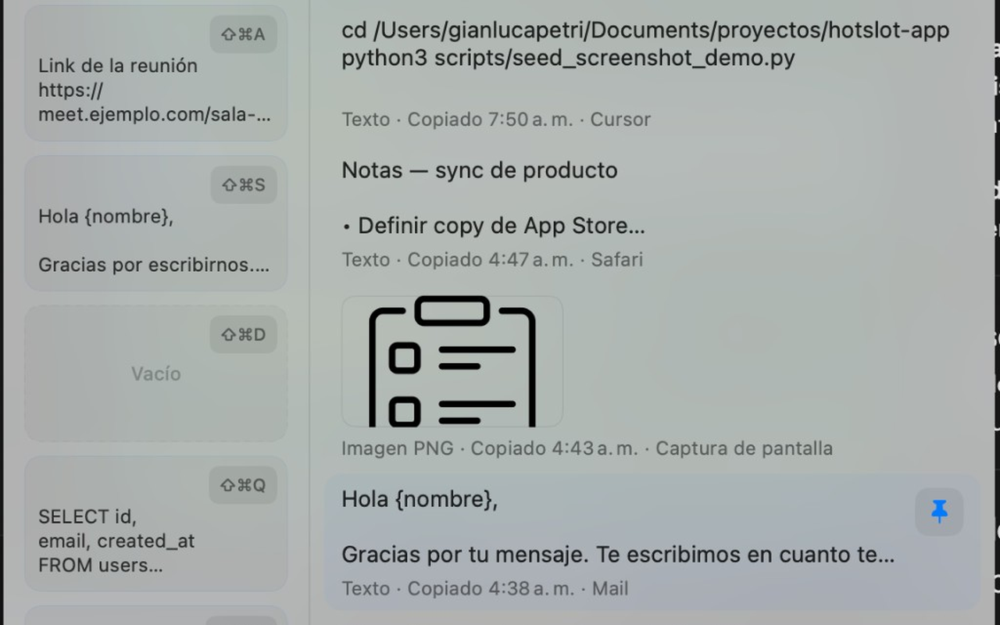

Historial persistente
Texto e imágenes recientes, búsqueda instantánea y vista previa al pasar el cursor.
macOS 14+ · Distribución directa
Historial inteligente, slots fijos y pegado automático donde estabas trabajando. Mismo material y fluidez que el panel de la app — todo local, sin cuentas.

Panel flotante con vibrancy nativa — como en la app
Por qué HotSlot
Texto e imágenes recientes, búsqueda instantánea y vista previa al pasar el cursor.
Guardá fragmentos en ranuras con atajo dedicado. Arrastrá desde el historial o pegá con un clic.
Devuelve el foco a la app anterior y simula ⌘V — Notas, Safari, Cursor y más.
Sin nube, analítica ni cuentas. Tus clips viven en tu Mac.
Interacción
export const API_URL = …
Texto · hace 2 min
export const API_URL = "https://api.example.com/v1";
Pasá el cursor para expandir — igual que en la app.
Captura de pantalla
Imagen · hace 8 min
Miniatura 44×44 con expansión suave al hover (spring 0.32).
Slots
Instalación
Descargá el .dmg firmado con Developer ID y notarizado por Apple.
Arrastrá HotSlot a Aplicaciones y abrila desde ahí la primera vez.
Concedé Accesibilidad cuando lo pida el onboarding — solo para ⌘V/⌘C simulados, no leemos pantalla.
macOS puede pedir confirmar el desarrollador la primera vez. Verificá el checksum en GitHub Releases.
Distribución
La versión pública usa Developer ID + notarización para que el pegado automático funcione con Accesibilidad — algo que el sandbox de la App Store no permite sin recortes.